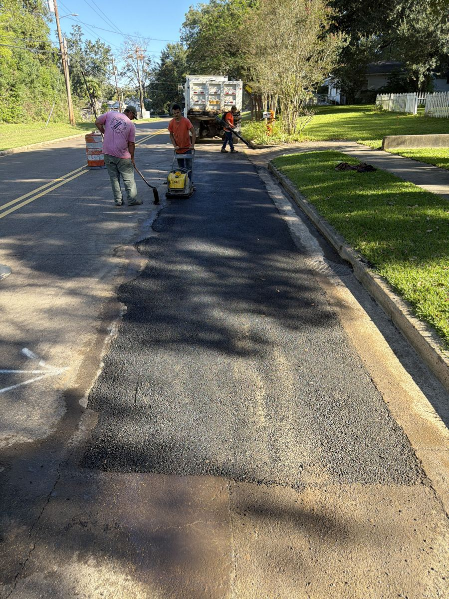
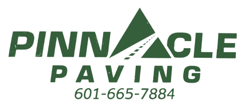
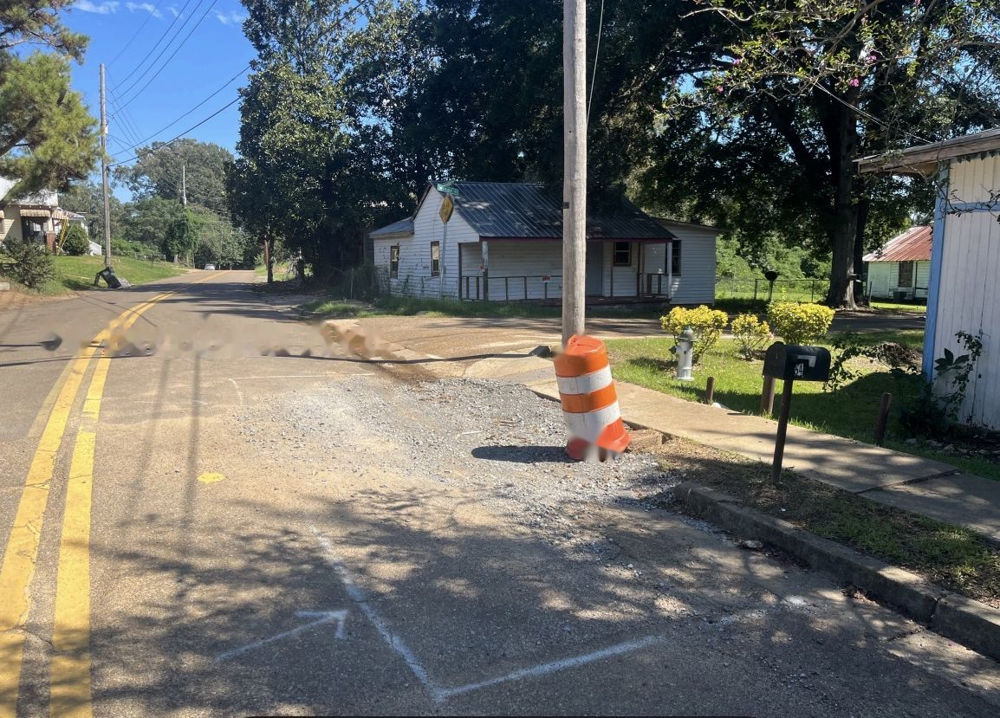
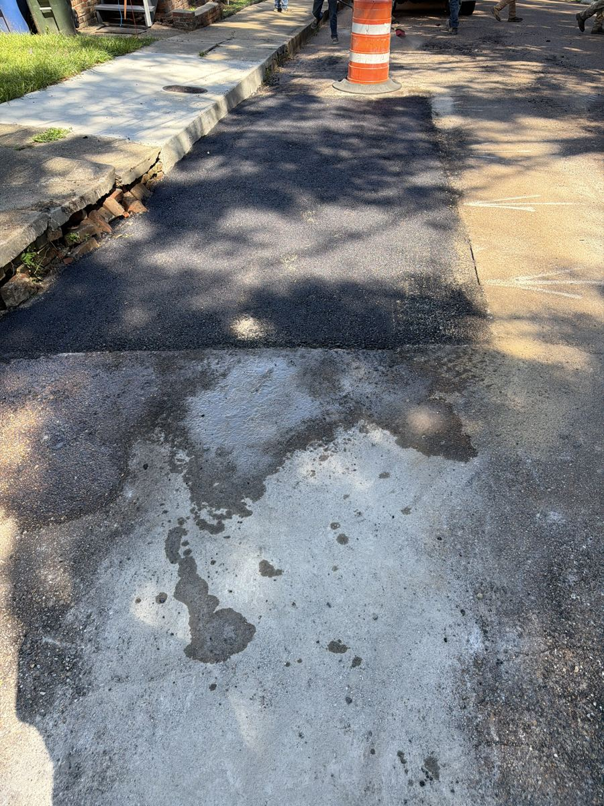
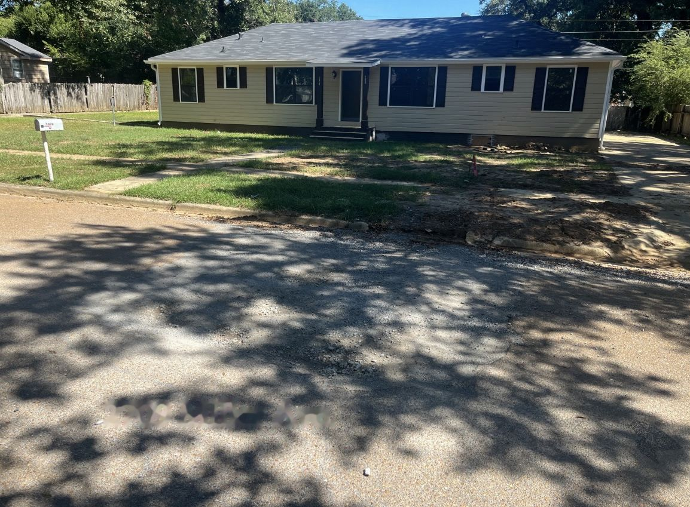

✓ CompletedSpot 1
113 Auburn Ave
- Size
- 42′ × 6½′ · 273 sq ft
- Saw cut
- 55 lin ft
- Date
- Oct 8, 2026
Plate-packed
Patch photo


✓ CompletedPlate-packed
Patch photo

✓ CompletedCity-marked location photo (before)

✓ CompletedPatch photo

✓ CompletedCity-marked location photo (before)